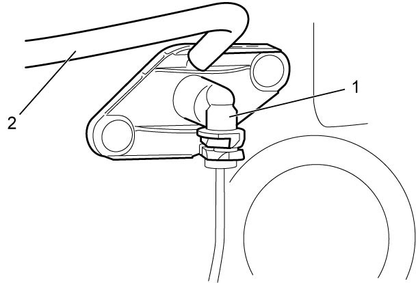
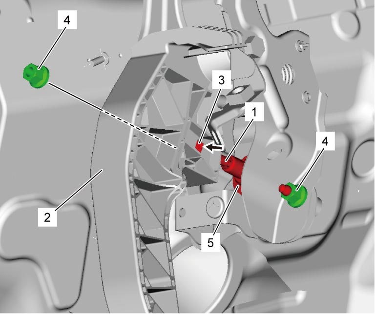

5C
| Clutch Master Cylinder Removal and Installation |
Removal
1)Clean around brake master cylinder reservoir cap and remove fluid from brake master cylinder reservoir with syringe or the like.
2)Disconnect clutch fluid pipe from clutch master cylinder (1). 
3)Disconnect clutch reservoir hose (2).


 "Expand image")
4)Remove push rod (1) from clutch pedal (2) while pushing pressure pad (3) as shown in figure.
5)Remove clutch master cylinder nuts (4), and then remove clutch master cylinder (5).

 "Expand image")
 "Expand image")